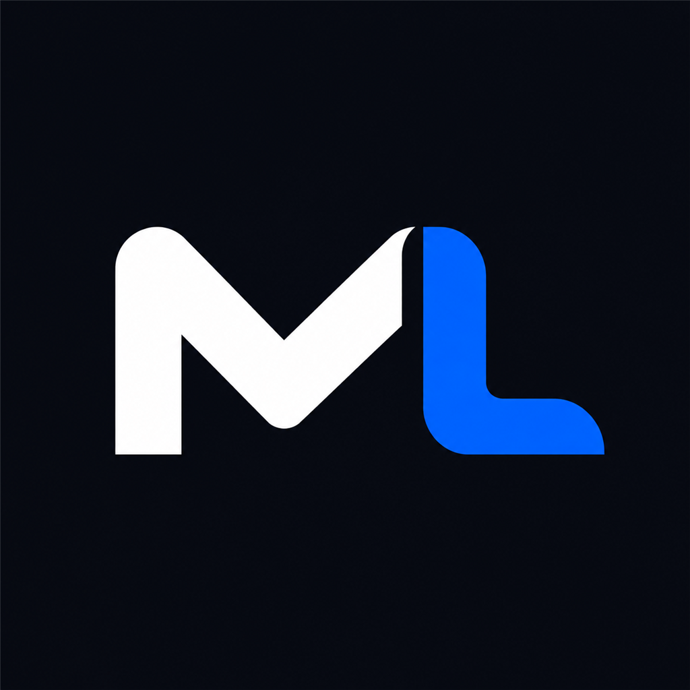
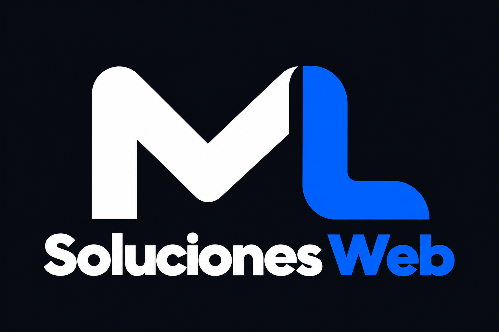

Landing pages
y páginas web
Presentá tu negocio, tus servicios o una propuesta puntual con una página clara y adaptada a celulares.
- Diseño alineado con tu marca
- Contacto directo por WhatsApp
- Estructura y contenido organizados

MLSOLUCIONES WEBHablemosDISEÑO Y DESARROLLO WEB
Páginas web y tiendas online que muestran lo que hacés y hacen más fácil que tus clientes te encuentren y te contacten.
Atención directa con Matías Lavoy · Propuestas a medida

01 / QUÉ PUEDO HACER POR VOS
Desde tu primera página hasta una tienda que necesita ordenarse. Partimos de lo que tu negocio necesita.
Presentá tu negocio, tus servicios o una propuesta puntual con una página clara y adaptada a celulares.
Una tienda organizada para mostrar tus productos y acompañar a tus clientes desde la primera visita.
Si ya tenés una web, revisamos qué se puede mejorar para que sea más clara, útil y fácil de encontrar.
02 / TRABAJOS
Cada negocio tiene una historia diferente. Mi trabajo es darle una presencia digital que la acompañe.
Diseño y desarrollo del sitio web.
Visitar sitioDiseño y desarrollo del sitio web.
Visitar sitioOrganización de la tienda y mejoras de SEO en curso.
Visitar tienda03 / QUIÉN ESTÁ DETRÁS
Detrás de ML Soluciones Web estoy yo, Matías Lavoy. Diseño y desarrollo sitios para negocios que quieren dar su próximo paso en internet.
Vas a hablar directamente conmigo: desde la primera idea hasta la puesta online. La propuesta parte de entender qué hacés, a quién querés llegar y qué necesitás que tu web resuelva.
Empecemos por una conversación04 / CÓMO TRABAJAMOS
Me contás tu idea, tus objetivos y qué necesitás.
Acordamos alcance, presupuesto y tiempos antes de empezar.
Trabajo en el diseño y el desarrollo, y revisamos los avances juntos.
Revisamos la versión final y conectamos la web con tu dominio.
EL PRÓXIMO PROYECTO PUEDE SER EL TUYO
Contame qué tenés en mente. Vemos juntos por dónde empezar.
Hablemos por WhatsAppmlsolucioneswebar@gmail.com